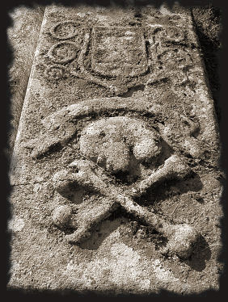

Von den Tempelrittern zu den Freimaurern…
Stand die Wiege der Freimaurerei in Schottland? Ist sie das Vermächtnis der Tempelritter, die nach dem 13. Oktober 1307 (als gegen alle Mitglieder des Ordens ein Haftbefehl erlassen wurde) in Schottland Zuflucht gefunden hatten? Hat Robert I (the Bruce) den Tempelrittern Asyl gewährt, um von ihren Militärkünsten zu profitieren, die ihm letztlich zum Sieg von Bannockburn und zur Unabhängigkeit verhalfen?
Die Antworten auf diese Fragen lassen sich vielleicht in der Kirche von Kilmartin finden, Standort beeindruckender Grabsteinreihen von Templergräbern, auf denen Ritter, Boote der Templerflotte, Köpfe von Verstorbenen oder ganz einfach Schwerter dargestellt sind (was charakteristisch für Templergräber ist). Merkwürdigerweise findet man auf diesen Grabsteinen jedoch auch handwerkliche Symbole wie Winkeleisen und Kompass.
Im Friedhof von Kilmartin sind zahlreiche Templergrabsteine aus dem Gebiet Argyll aufgestellt.
Sie sind der Beweis dafür, dass der Templerorden in Schottland auch nach 1312, dem Jahr seiner offiziellen Auflösung, noch weiter existiert hat. 
Der Orden hat sich zunächst verdeckt gehalten, zunehmend weltliche Züge angenommen und ist schließlich in der Freimaurerei aufgegangen.
